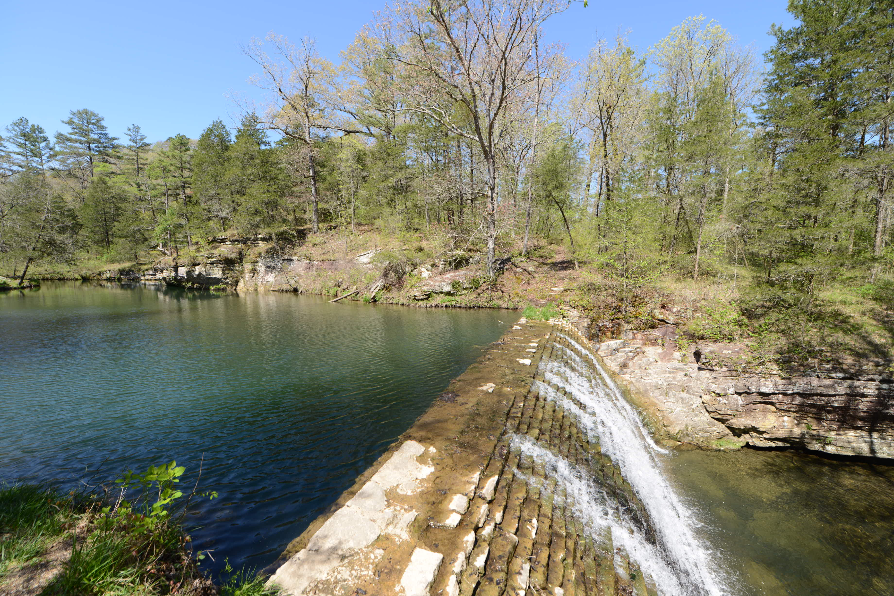
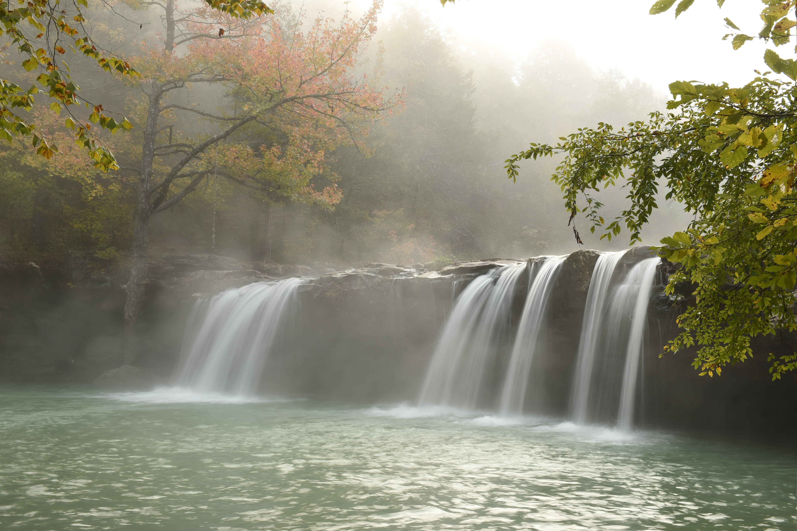
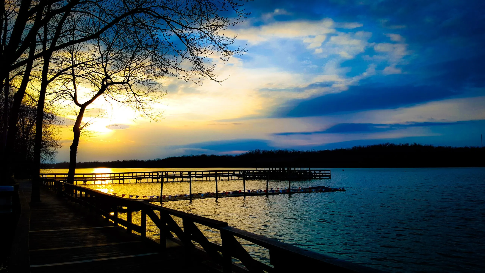

Blanchard Springs
One of the best known swimming holes is Blanchard Springs Recreation Area just north of Mountain View in north central Arkansas. At the recreation area, you'll find ample opportunities for swimming, fishing, picnicking and hiking, surrounded by picturesque bluffs. There are also outdoor theatre programs in season and tours are offered at Blanchard Springs Caverns. To get to Blanchard, take Ark. 9 north from Mountain View for seven miles, go west for six miles on Ark. 14, then take Forest Service Road 1110 for three miles.

Shores Lake
Eighty-two acre Shores Lake is a popular swim spot. Located about 15 miles north of Mulberry on Ark. 215, the lake is in a mountain setting and provides access to the Ozark Highlands Trail. You can also fish, hike and picnic here.

Falling Water Falls
The falls spill into a lovely and large pool, perfect for swimming. It’s also easy to access as it is right by the road. At the junction of Arkansas 7 and 16 at Pelsor, turn east on 16 to Ben Hur, then south about 1.5 miles to Forest Service Road 1205. Turn east on this road and remain on it for about 3 to 4 miles (maybe less). You’ll be following Falling Water Creek and will come upon the falls to your right — easily visible from the road.

Lake Fayetteville
Lake Fayetteville comprises 458 acres of land and 194 acres of water. The lake is a fisherman's dream and offers an abundance of recreational activities for outdoor enthusiasts. There are several components of Lake Fayetteville, including the North Shore Park and disc golf course, Veterans Memorial Park, a boat dock and marina, Lake Fayetteville Softball Complex, boat and bike rentals, and The Botanical Garden of the Ozarks. There is also a 5.5-mile nature trail around the lake, as well as 4.3 miles of hard-surface multi-use trail that also circles the lake.